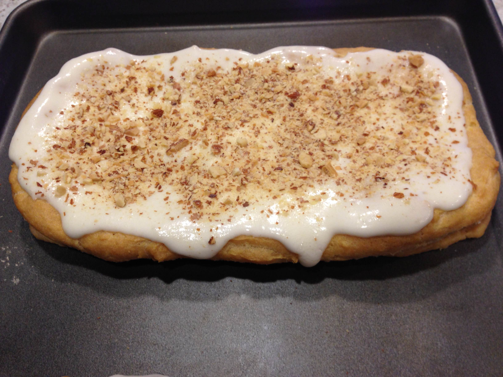
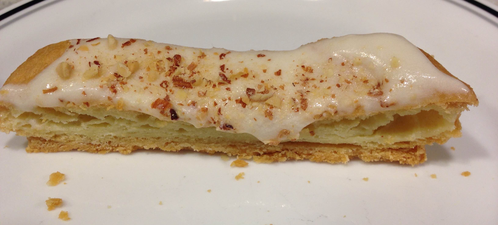
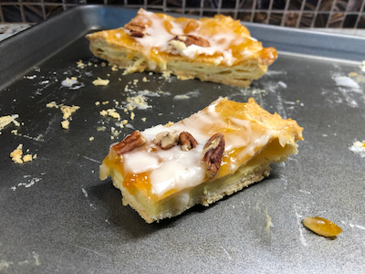

A custardy cloud resting on top of a buttery, flaky crust, topped with a sweet glaze and sprinkled with nuts. It has been a favorite for years and I was surprised twice: someone from the Great British Bakeoff was going to make it and Mary Berry had never heard of it.
Crust
½ cup butter, softened
1 cup flour
2 Tbl water
¼ tsp salt
Choux
½ cup butter
1 cup water
¼ tsp salt
1 tsp almond extract
1 cup flour
3 eggs
Glaze
1½ cups powdered sugar
2 Tbl butter, softened
¾ tsp vanilla
½ tsp orange
1-2 Tbl warm water
1 pinch spoon salt
Preheat oven to 350℉. Note: if using salted butter, leave out salt.
Crust
Cut butter into flour until particles are the size of small peas.
Sprinkle with water; mix with fork. Gather pastry into a ball; Refrigerate for 15 minutes.
Divide into halves; patting each half into a rectangle, 12x3" (3" apart), on ungreased cookie sheet. Use a pastry scraper to square up.
Choux
Heat 1/2 cup butter and 1 cup water to rolling boil; remove from heat.
Quickly stir in almond extract and 1 cup flour.
Stir vigorously over low heat until mixture forms a ball, about 1 minute; remove from heat.
Add eggs one at a time; beating after each until smooth and glossy. 🥚
Spread half of the choux over each rectangle.
Bake about 1 hour until topping is crisp and brown.
Glaze
Mix powdered sugar, butter, and vanilla.
Stir in water until smooth and of desired consistency.
Spread on top; sprinkle with nuts.
Danish Puff
Slice of Danish Puff
Danish Puff with Apricot Jam
The topping will puff while baking and barely expand over the edge of the crust. The glaze will appear to slightly weigh down the puff but it collapses when it cools to form the custardy center.
Like many pastries, it is a sweet, and messy, confection with a flaky bottom crust while the choux, although crisp on the outside, has a custardy center. Because flour, butter and eggs doesn't make a strong flavor, the almond extract adds to the bulk of it.
Other Versions
I was surprised to read some of the descriptions for the Danish Puff. Several people recounted stories of how the recipe was handed down over generations or how it was made for special occassions. I got mine from a "Gold Medal Flour" anniversary cookbook.
From a test kitchen, makes the recipe seem slightly more authentic, I guess.
King Arthur Flour has a very similar recipe that adds jam to the top before glazing. I made some and it was better than normal.
Dirty Laundry Kitchen has what appears to be the same recipe
Relating stories to recipes is quite natural as a food's flavor and aroma are good for jogging old memories. My sister and I would make these for no reason at all other than to indulge.